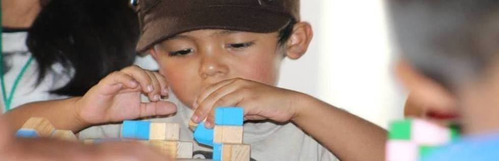
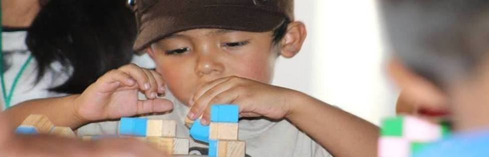

| Instructor | Descripcion |
|---|---|
| Marco Antonio Figueroa Ibarra | Burbujas : Se explorarán las propiedades de las burbujas y las matemáticas que hay detrás de ellas. Para ello, serán sumergidos en jabón algunas figuras matemáticas, entre ellas, los sólidos platónicos, que gracias a su simetría, formarán burbujas muy interesantes. |
| Torres de Hanoi : Las torres de Hanói es un rompecabezas matemático del s. XIX. Se trata de mover 64 discos de una torre a otra siguiendo dos sencillas reglas. La leyenda dice que cuando se termine el rompecabezas, el Mundo se acabará. | |
| Cubo Soma: El cubo soma es un rompecabezas de 7 piezas, cada una de ellas formada por 3 o 4 cubos unitarios. Con él, se puede formar un cubo y ese resulta el primer reto. | |
| El rompecabezas de las ranas: En este taller se estudiará el rompecabezas de las ranas, el cual es un rompecabezas con reglas muy sencillas, pero que no es fácil de resolver. | |
| Rosalina Gonzales. | Arte-teselaciones: Polígonos y diseño: Se trabajará con nociones básicas de geometría, en especial la construcción de polígonos regulares y sus características, se abordará el concepto de teselación, sus características fundamentales y su existencia en ciertas expresiones artísticas a lo largo de la historia universal. |
| Loteria, memorama y conjuntos matematicos : El público aprenderá a diseñar su propio memorama y lotería matemáticos, donde, en vez de usar totalmente las tarjetas , se complementarán con descripciones varias para nutrir el conocimiento previo y relativo a las distintas figuras geométricas. | |
| Mariana Carnalla Cortes. | Matematicas para la familia I, II, III, IV : Gracias a las ONGs Matemática para la Paz y Share, se implementan estas actividades por todo mundo. Matemáticas para la Familia fue desarrollado en la Universidad de California en Berkeley para ayudar a los padres a convertirse en socios más efectivos en ayudar a sus hijos a tener éxito en las matemáticas. Bajo la firme creencia de que las matemáticas pueden y deben ser divertidas, los padres y los niños aprenden juegos y rompecabezas que son ricos en contenido matemático – incluyendo el número y la estimación, el pensamiento lógico, la probabilidad y la estadística, geometría y medición. |
| La forma de las cosas : Se abordará una rama de las matemáticas llamada topología. Exploraremos superficies, nudos y acertijos. Muchos de los cuales jugarán con nuestra intuición y desarrollaremos pensamiento espacial a través de actividades como recortar, pegar y jugar. | |
| ¿Aguila o sol? : Taller relacionado con probabilidad y estadística, presentaremos distintos problemas donde el azar juega un papel importante, como lanzamiento de dados, ruletas, catafixias, entre otros. Veremos si es posible encontrar estrategias que nos permitan ser ganadores con mayor frecuencia. | |
| Ignacio Barradas Bribiesca | Matemagia para niños : Se reflexionará sobre algunos elementos que permiten captar la atención del alumno en la clase, en especial la magia. Se discutirá cómo es posible usar la magia como recurso didáctico a diferentes niveles; como captador de atención; como premio por buen desempeño, etc. |
| Matemagia para grandes : Se reflexionará sobre algunos elementos que permiten captar la atención del alumno en la clase, en especial la magia. Se discutirá cómo es posible usar la magia como recurso didáctico a diferentes niveles; como captador de atención; como premio por buen desempeño, etc. | |
| Laura Cecilia Avila Jauregui | Transformando papel II : origami modular ( Parte I y Parte II): El participante recuerde o aprenda conceptos de geometría- incluyendo los términos como lados, caras, vértices, aristas, polígonos, polígonos regulares, poliedros, sólidos platónicos. Haciendo uso del arte de doblar papel, a través de la técnica modular, podemos construir diferentes poliedros. |
| Berta Gamboa de Buen | Versiones y diversiones con fracciones: En este taller se verán diversas formas de introducir fracciones y explicar las operaciones con ellas de manera lúdica. Esperando que los participantes entiendan el significado de fracción y de las operaciones, como se escriben y las manipulen de manera lúdica. |
| Carmen Delia Mares Orozco | Transformando papel I Fexágonos: En este taller construiremos un trihexaflexágono (un hexágono con tres caras) y un hexahexaflexágono (un hexágono con seis caras) y estudiaremos algunas de sus propiedades geométricas. |
| Caleidociclos 3D: Los caleidociclos tridimensionales son poliedros flexibles que pueden mostrar distintas caras al exterior. En este taller construiremos uno y estudiaremos sus distintas propiedades. | |
| Shongo Networks: En este taller estudiaremos una rama de las matemáticas que se llama teoría de grafos. Estudiaremos dos problemas famosos: un juego de caminos y el teorema de los 4 colores. Nos enfrentaremos a problemas que pueden tener muchas, una o ninguna solución. | |
| Luz del Carmen Zubieta Rico | Matemáticas para peques: Se les enseñará una serie de actividades que se pueden realizar con niños de preescolar. Algunas de los temas que se abordarán son: figuras geométricas, conjuntos, sistema de numeración decimal, patrones, acertijos y lógica. |
| Juegos de Estrategia: En este taller trabajaremos con el juego NIM y juegos en el tablero de ajedrez. Las actividades consistirán en encontrar la estrategia ganadora. | |
| Sistemas de numeración y de medir:Se enseñarán algunos talleres sobre distintos sistemas de numeración, como el sistema maya, el sistema decimal, el sistema babilonio y el sistema romano. Además, tendremos actividades sobre la historia de las unidades de medir, en el que los niños construirán su propio sistema para medir longitud. | |
| Gasde Hunedy | Burbujas y teatro matemático : El taller en sí es una conjunción de los talleres, "Burbujas de Jabón y Matemáticas" y "Teatro Matemático". La idea principal para esto, es presentar herramientas y técnicas teatrales para divulgar ciencia y ponerlas en práctica con los conceptos físicos y matemáticos involucrados en las burbujas de jabón. |
| Vladimir Lerin | Juegos matemáticos : Se presentan juegos de invarianza, probabilidad y de destreza. |
| Gloria Martínez Cruz | Puzzles planos con pentominós, acertijos y juegos topológicos. |